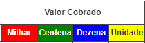
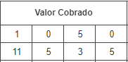
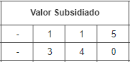
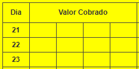
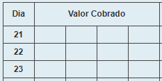

Acesse este artigo para saber mais sobre as funcionalidades do totalizador, inclusive "salvar a ficha como PDF".
CMAM - Modelo 7
República de MoçambiqueMinistério da SaúdeCentral de Medicamentos e Artigos Médicos
Mapa Resumo Mensal De Caixa
Dia
Valor Cobrado
Valor Subsidiado
Valor Total
Nº de Receitas Aviadas
Valor Distribuido ao Internamento
21
22
23
24
25
26
27
28
29
30
31
1
2
3
4
5
6
7
8
9
10
11
12
13
14
15
16
17
18
19
20
Total
Dia:Indicador:
Totalizador de Mapa Resumo Mensal de Caixa
O totalizador garante um resumo mensal correctamente totalizado, porém, um resumo mensal de qualidade não se limita apenas à uma correcta totalização. Outros factores, independentes do totalizador, como preenchimento correcto e legível dos livros de registo, colheita de dados abrangente a todas as fontes primárias com informação do mês em reporte, cruzamento e concordância dos dados, entre outros, contribuem sobremaneira para a qualidade de um resumo mensal.
Totalizador de Mapa Resumo Mensal de Caixa
Esvaziar ficha
Tem certeza de que deseja esvaziar a ficha?
Visão geral sobre o totalizador
O Totalizador de Mapa Resumo Mensal de Caixa é um serviço online gratuito que auxilia na elaboração, como o nome sugere, do mapa resumo mensal de caixa por meio do cálculo automático dos totais com base nos valores preenchidos pelo usuário. Foi criado de acordo com o modelo da ficha de mapa resumo mensal de caixa actualmente vigente no Serviço Nacional de Saúde em Moçambique.
Objectivos
Auxiliar os profissionais de saúde na totalização do mapa resumo mensal de caixa com exatidão e prontidão;
Minimizar possíveis erros de totalização.
Expandir o acesso à ficha de mapa resumo mensal de caixa.
O que eu preciso dispor para, e como utilizar o totalizador?
Um celular ou computador com acesso à internet;
Para cada variável (Valor cobrado e Subsidiado), preencher os valores correspondentes em função dos dias do mês em reporte e consequentemente os respectivos totais são, em tempo real, correcta e automaticamente calculados.
Qual é o destino dos dados que eu insiro?
São guardados no seu celular ou computador, por meio de um recurso chamado Web Storage e você tem total controle sobre os dados, podendo mantê-los ou apagá-los por meio da opção "Esvaziar ficha" no menu do totalizador ou excluindo os dados de navegação do seu navegador.
Vantagens do totalizador
Calcula automaticamente os totais;
Preenche automaticamente as células correspondentes aos totais;
Fornece resultados (totais) exactos;
Flexibiliza a elaboração do resumo;
Pode ser impresso, inclusive como uma simples ficha de mapa resumo mensal de caixa;
Pode ser guardado como PDF.
Ajuda e Procedimentos
Como preencher os valores

Os valores devem ser preenchidos respeitando as 4 casas decimais, isto é, cada algarismo deve ser enquadrado na respectiva casa decimal. Por exemplo, o correcto preenchimento de vinte e cinco (25) é ou e NÃO , tampouco ou de qualquer outra forma.
Os zeros a esquerda podem ser substituídos por "−" (sem as aspas).


Exemplos de preenchimento com 4 ou mais algarismos (à esquerda) e 3 (à direita).Realçar totais
Adiciona cor de fundo amarela às células dos totais. Essas têm o acesso interdito e a funcionalidade de realçá-las, permite distinguí-las facilmente das outras células. Muito útil em celulares.
A cor de realce de fundo das células não afecta a impressão.
Ir para o dia...
Abre um campo no qual pode digitar um número de dia no intervalo de 1 à 31 e, uma vez digitado o número, a página rola até a linha correspondente ao dia.
Esvaziar ficha
Comando para limpar parcial ou completamente a ficha após confirmação da acção na caixa de diálogo subsequente.
Salvar ficha como PDF
No computador:
Clique na opção Imprimir no menu do totalizador.
Na janela que abrirá, no campo de Impressora ou Destino, selecione a opção Salvar como PDF.
Por fim, clique em Salvar e escolha um destino no seu computador.
No celular / tablet:
Toque na opção Salvar como PDF no cabeçalho do totalizador.
Na janela seguinte, se não vir a opção Guardar como PDF, toque emSelec. impressora.
De seguida, selecione ou mantenha a opção Guardar como PDF e por fim, toque no simbolo em forma de disquete e escolha um destino no seu celular para salvar o resumo.
Simular duplicado ou triplicado da ficha
No rodapé da ficha, encontram-se as opções Original, Duplicado e Triplicado.
Por padrão, está selecionada a opção Original. Mudando a seleção para Duplicado, a ficha muda de cor de fundo para amarelo (simulando um duplicado) e clicando sobre a opção Triplicado, o fundo muda para azul claro (simulando um triplicado), cores essas que em impressões coloridas, aproximam-se mais do aspecto de duplicado e triplicado.


Simulação de Duplicado (à esquerda) e de Triplicado (à direita).Algumas células ficaram vermelhas
Uma célula adopta um fundo vermelho como sinal de alerta para indicar que o valor contido nela, excedeu a largura fixa da célula e, por isso, os últimos algarismos estão omissos, ou seja, estão fora da área visível da célula.
Se os tópicos acima não cobrem as suas dúvidas, pode ainda solicitar suporte ao desenvolvedor através do endereço electrónico quinamine.aderitofelix@gmail.com ou através do WhatsApp.